The app
A free personal roadmap in English and Spanish, with stories, speaking, songs and games on one path.
Front doorPartner Book · November 2026
FEschool is a language school that builds its own method, app, games and courses. Every learner gets a path that belongs to them: their goal, their level, their pace, their story.
Free. Opens in the browser.
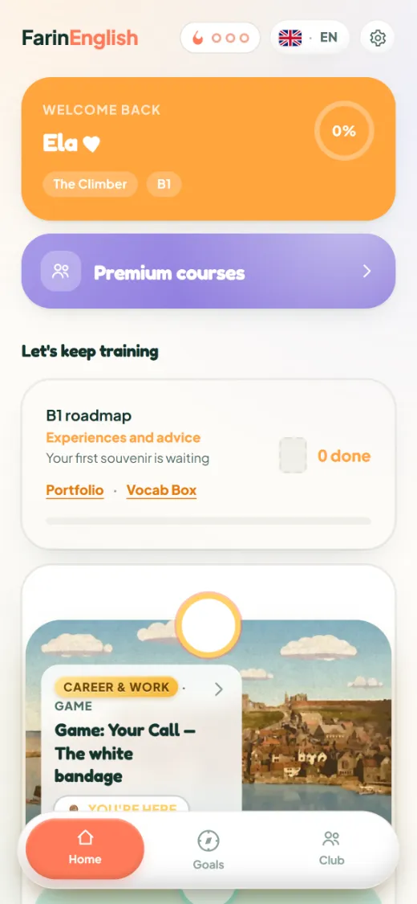
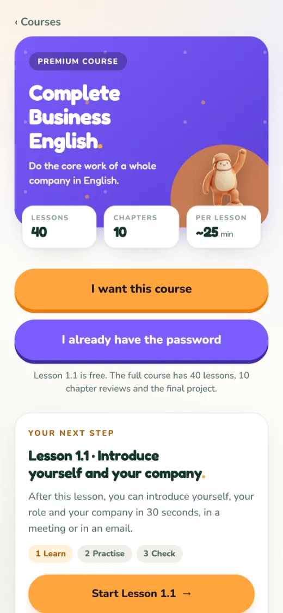
Stop 01 · Start here
FEschool started as one teacher’s private classes. Today it is a modern language academy and a small creative studio, with a live product used by real learners in Türkiye and Iran.
A free personal roadmap in English and Spanish, with stories, speaking, songs and games on one path.
Front doorStory and mystery games inside the app, plus 100 Doors, a co-op 3D detective game.
Why learners come backSeven premium courses for career and exam goals, plus live classes with a teacher.
RevenueWe make our own educational games and, next, short films, as products and for partners.
How it scalesA personal, game-based learning system that takes each learner from where they are to the goal they actually have, made in Turkish and Persian for two large markets with few products built for them.
Stop 02 · The problem
Adults study for years and still freeze when they have to speak. What they lack is use, and most options on the market fix only part of it.
Türkiye, EF English Proficiency Index 2025, score by skill. Rank 71, “moderate” band.
Stop 03 · Vision & mission
Every learner leaves able to speak, think and feel at home in another language.
Build a personal, game-based system that takes each learner from where they are to the goal they actually have, and make it good enough that they choose to come back every day.
What we are becoming. A modern language academy and a creative studio. Teaching proves the method. The studio is how the method scales.
You firstThe learner is the centre of the system.
100% personalNo copy-paste lessons, no single path.
Purpose-drivenA job, an exam, a move, a trip.
Speaking mattersA language is for using.
Real languageWhat textbooks skip: slang and real situations.
Progress, not attendanceEvery step has a reason to exist.
Stop 04 · Who it is for
Every learner starts by naming up to three goals. Each goal has its own colour and clay character across the app, the website and our posts.
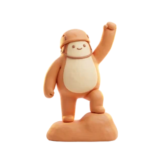
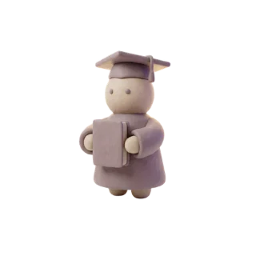
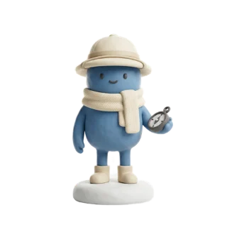
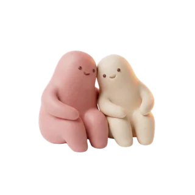
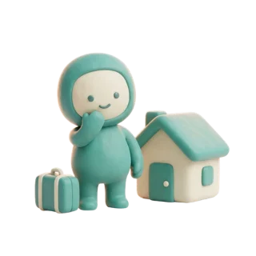
| Learner | What they buy from us |
|---|---|
| Professionals and office staff | Career courses: Complete Business, HR & Business, Sales & Trade, Copywriting, AI, Job Interview |
| Exam takers | IELTS: 10 full exams, with writing reviewed by Farin |
| People moving abroad | The free path, career courses and live classes |
| Everyday and travel learners | The free app: stories, songs and games |
| Companies | Staff packages with team discounts and live support |
| Learners who want a teacher | Live online classes, 1-to-1 or in small groups |
Our Instagram audience by country, October 2026.
Four interface languages, chosen on the first screen.
Both markets want English and have few products made for their learners. Spanish adds a second language line in the same markets.
Stop 05 · The market
Learners in Türkiye and Iran choose between global apps, tutor marketplaces, schools and video courses. Each one solves part of the problem.
Duolingo, Babbel, Busuu
Babbel ₺3,399 a year · Busuu Premium ₺509 a year
Does wellA daily habit, polish, a low price
MissesOne course for everyone, little real speaking, little career or exam depth
Cambly, Preply
Cambly ₺411–3,573 a month · Preply tutors US$15–40 an hour
Does wellReal conversation
MissesPaid by the hour, with no system between lessons
Berlitz, university centres, local institutes
Berlitz online IELTS ₺6,900 for 3 months · İTÜ SEM IELTS ₺28,450 for 100 hours
Does wellStructure and a known name
MissesTied to the classroom and the textbook, and expensive
Udemy, Maktabkhooneh, Boğaziçi Enstitüsü
Maktabkhooneh interview course 174,500 toman · Boğaziçi B2 Business ₺2,499
Does wellCheap, often with a certificate
MissesWatch-only: no practice, no feedback, no path
Our assessment, November 2026.
| — | Path built on your goal | Story and game experience | Career and exam depth | In Turkish and Persian | A teacher when you want one |
|---|---|---|---|---|---|
| Global apps | Partly | Partly | Partly | Partly | No |
| Tutor marketplaces | Partly | No | Partly | Partly | Yes |
| Schools and institutes | No | No | Yes | Partly | Yes |
| Video course sites | No | No | Partly | Yes | No |
| FEschool | Yes | Yes | Yes | Yes | Yes |
YesPartlyNo
Prices from public price pages and app stores in Türkiye and Iran, checked October 2026.
Stop 06 · Our position
Most products ask the learner to fit the course. FEschool fits the course to the learner. That is the one idea we want people to remember about us.
Positioning statementFor adults in Türkiye and Iran who need a language for a real goal, FEschool is the learning system that makes the path theirs. It starts from their goal, keeps them coming back with stories and games, and finishes with a course for the goal itself. Global apps give everyone the same course, and tutors stop when the lesson ends. FEschool keeps going with each learner.
The last line is from the app’s own premium courses screen.
Stop 07 · Personal, explained
In about two minutes the app learns who the learner is. Every screen after that uses it.
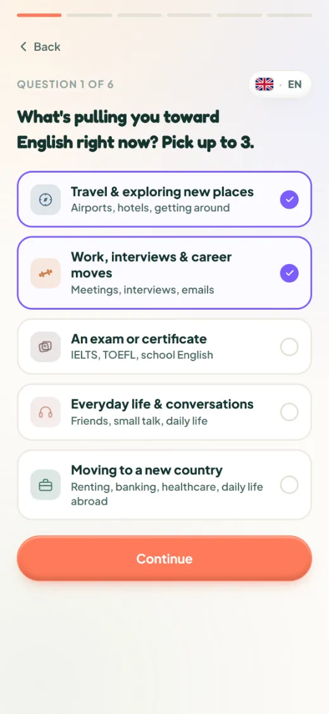
Pick up to three: travel, career, exam, everyday life, moving abroad.
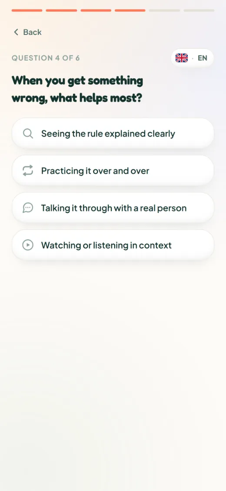
What helps most when you get something wrong? Rules, practice, conversation or context.
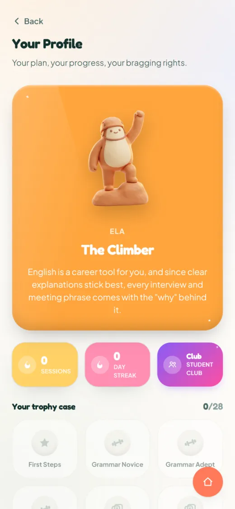
The answers become a learner persona, like The Climber for a career learner, with a plan written for them.
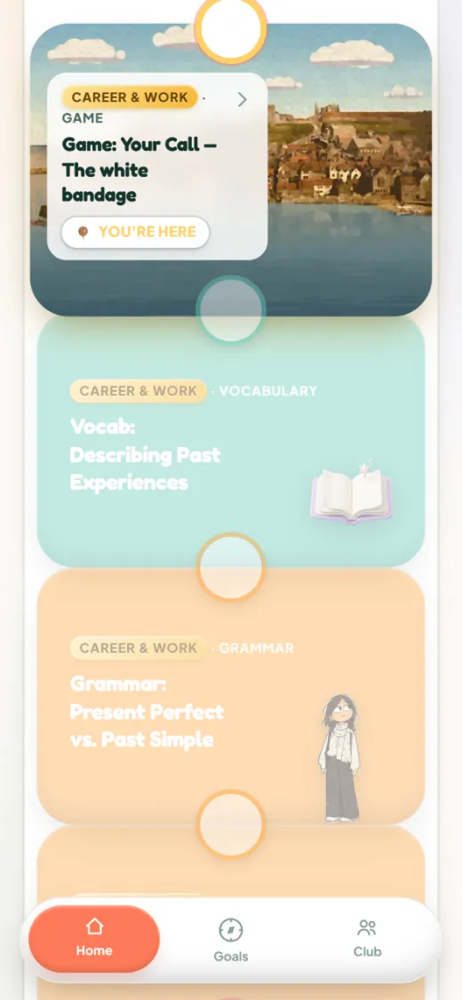
A roadmap at the learner’s level. Every stop is tagged with their goal.
The path keeps adjusting. Missed questions come back, finished stops leave souvenirs in a Journey Journal, and a new goal can be added without losing progress.
How roadmaps are built, ordered and adapted is proprietary and shared under NDA.
Stop 08 · The SELIF method
SELIF is FEschool’s own teaching method, created by our founder from 11 years in the classroom. Every app stop, game, course lesson and live class is built on it and checked against it.
Words arrive inside a story with real characters in real places, never as a list.
“I’m following someone I care about.”
The learner steps into someone’s place and speaks as that person.
“Today I’m the shopkeeper.”
The expressions people really use, met in action before any rule box.
“That’s how people really say it.”
Natural voices, music, video and true cultural detail around every lesson.
“I can hear and see the place.”
Their pace, their goal, their path, in short steps that fit a real life.
“It fits my day and my reason.”
The full SELIF framework, lesson structure and quality checks are shared under NDA.
Stop 09 · The system
The free app brings learners in. Games bring them back. Courses and classes earn revenue. The studio turns the method into products we can sell many times.
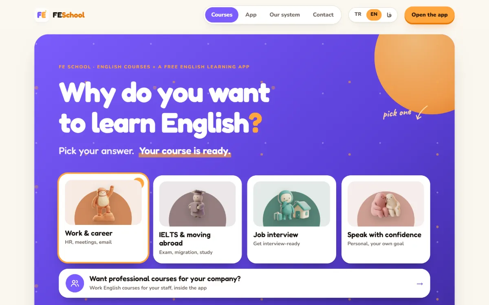
Stop 10 · The app
No wandering between menus. Stories, grammar, vocabulary, speaking, writing, songs and games all appear as stops on one journey. Free on the web and Android.
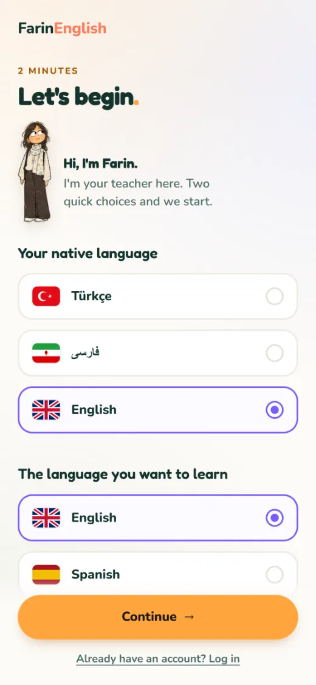
Farin, the teacher character, welcomes the learner in their own language.
Name, persona, level and progress come first.
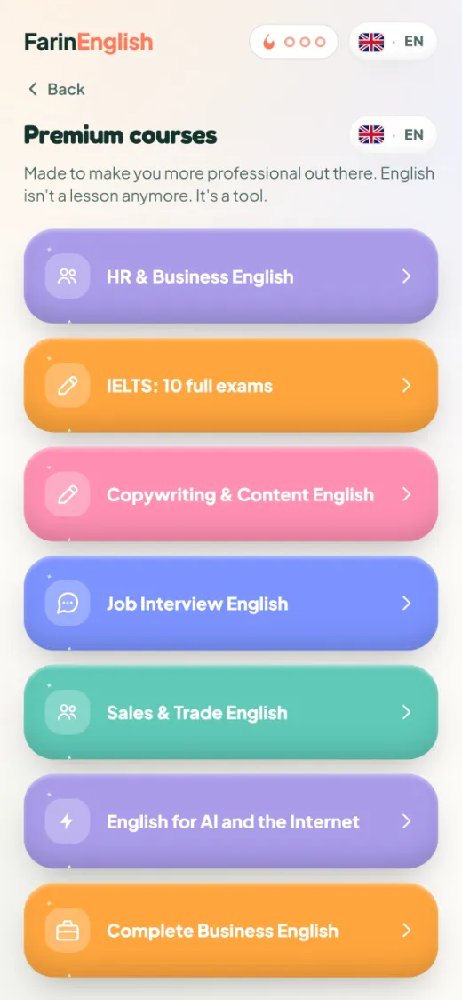
All seven premium courses open from the home screen.
Stop 11 · Games
Games are FEschool’s strongest difference. We hold them to the standard of real entertainment games: full screen, story-led, and made for every level from A1 to C1, in English and Spanish.
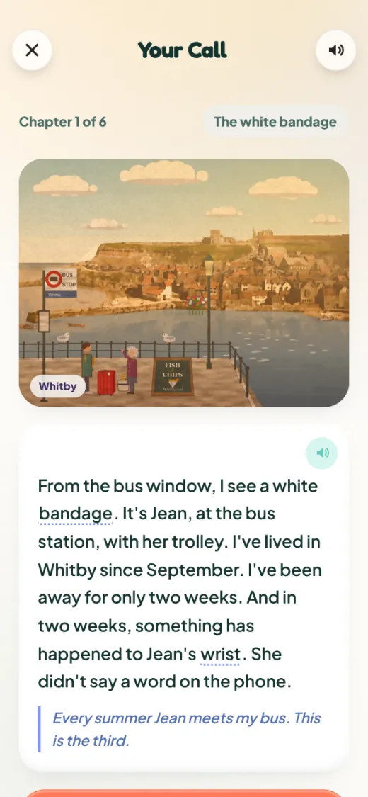
A comic-book adventure saga. A recurring hero, a new country at each level, and choices that change the story.
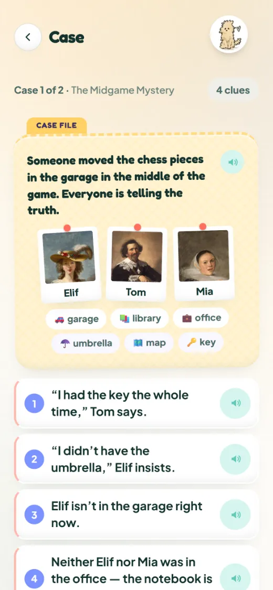
Short mystery episodes. Read the clues, rule people out, name who did it.
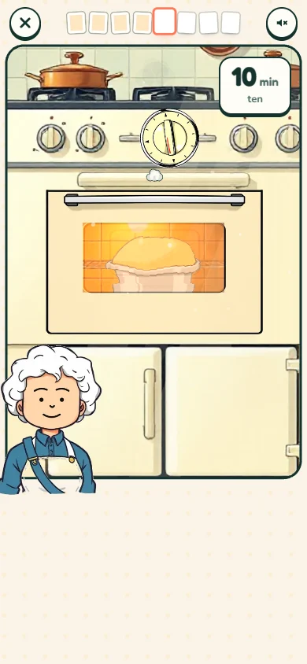
Calm, hands-on projects, like baking a cake, done by following sentences.
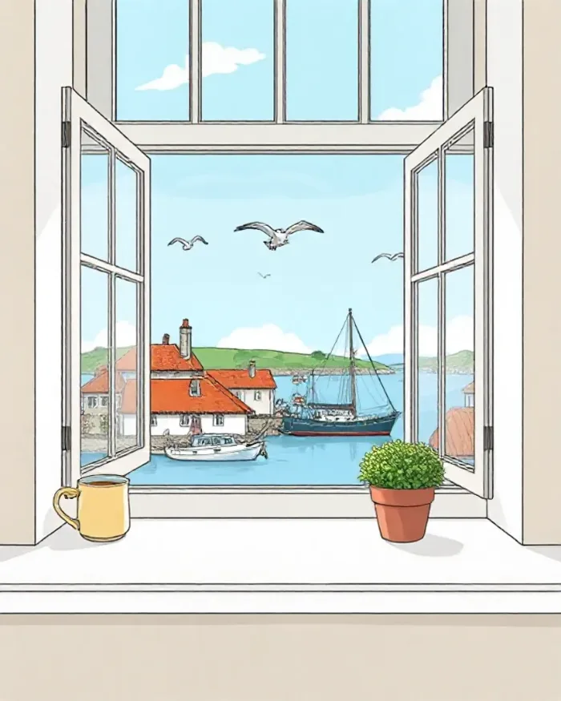
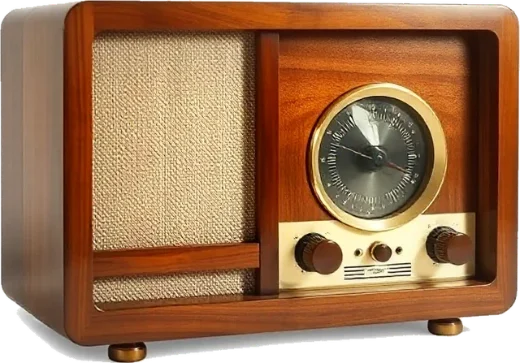
A listening game. Tune an old radio, follow a short show, then read along off air.
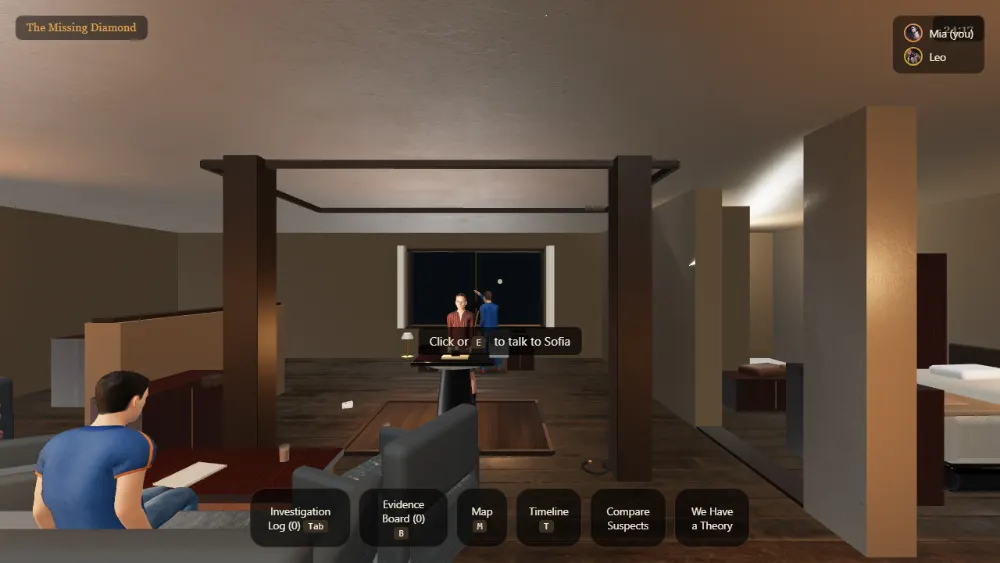
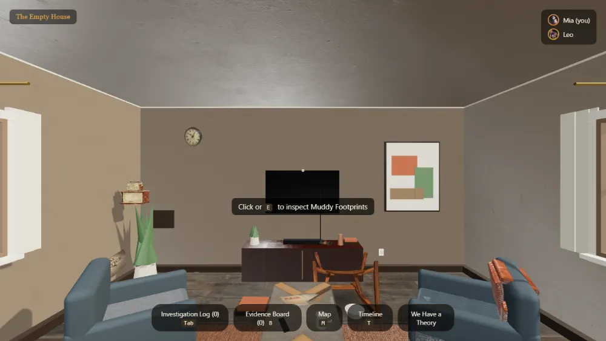
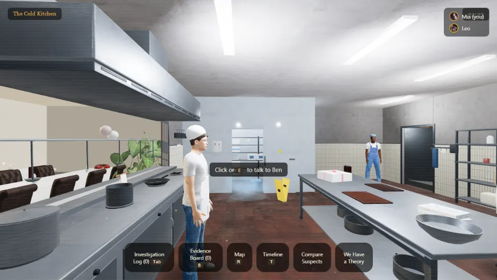
Co-op 3D detective game in the browser
Two to six players question, describe and argue in English to open the next door.
The Empty HouseThe Missing DiamondThe Cold Kitchen
Word RushBuild ItTrap DashWord BingoMini CrossMagic WordsListen & TypeSay It BackStory HuntOrder Up!Passport Desk
Game rules, story engines and our production pipeline are shared under NDA.
Stop 12 · Premium courses
The free path builds the habit. Premium courses finish the job: a career task, an interview, an exam. All seven are live in the app.
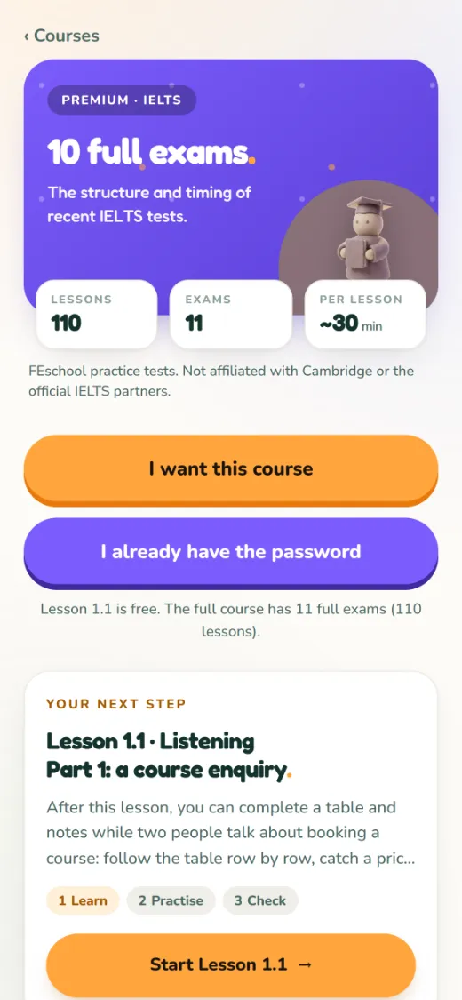
Do the core work of a whole company in English, up to board level.
Do 32 real HR tasks in English, from job ads to disciplinary meetings.
Close copies of recent IELTS tests, part by part. Farin reviews the writing.
Sell and trade in English, and finish with a sales kit you can use at work.
Write for foreign audiences, and learn to judge and fix AI drafts.
Know how the tools work. Write clear prompts. Check the results.
Walk into the interview with your own answers ready.
List prices, November 2026. Lira for Türkiye, toman for Iran.
Every course also has projects the learner does as real work.
Lesson 1.1 of every course is free. One payment gives 12 months of access. The learner taps “I want this course”, pays, and gets a personal course password.
Staff packages from the same courses: 15% off for 21–39 people, 20% off for 40 or more, and 8 live support sessions with Farin on every order.
Stop 13 · Marketing
We market the experience. People see the games, the stories and their own path, and every message is about their goal. Grammar lessons never go on our feed.
Widths show the order of steps, not measured conversion.
@the_feschool
Three Turkish and three Persian posts a week, plus Farin’s own Reels.
Company page + Farin’s profile
A Persian post every day about the premium and business courses.
thefeschool.com
Three languages, course pages with prices, a blog, Persian course pages and instant indexing.
One button on every course
Every sale starts with a message. Persian share pages carry a first-20 offer.
thefeschool.com/companies
A staff-training page with a questionnaire that suggests the right package.
Türkiye only
Small, measured Meta tests. Meta ads can’t target Iran.
10,000 Instagram followers by March 2027.
Schools and universities, HR departments, creators, and distribution in each market.
Stop 14 · Where we are
Everything here exists and is in use. We quote only numbers we can show.
Personal roadmap live in English and Spanish
Natural voices live
New website in Turkish, English and Persian, with prices
Seventh premium course live: Complete Business English
Persian course hub open, Persian sales running
Turkish and English sales open
New games go live
Google Play launch
DoneNext
237 lessons in the app
Plus 100 Doors online
App, October 2026, our test accounts excluded
English and Spanish
Türkiye: 1-to-1, ₺830–850 a lesson. Iran: groups of 1 to 4, at 3,500,000 toman a session for General English and 4,500,000 for Business.
One payment, 12 months of access, unlocked in the app with a password.
Company training, app-store sales, studio work for partners.
List prices in Türkiye, with the toman price for Iran.
Stop 15 · Roadmap
Targets, not promises. Each phase starts when the one before is ready, and the later phases depend on the partners we build them with.
Now to December 2026
First half of 2027
Second half of 2027
2028 and beyond
Stop 16 · Build it with us
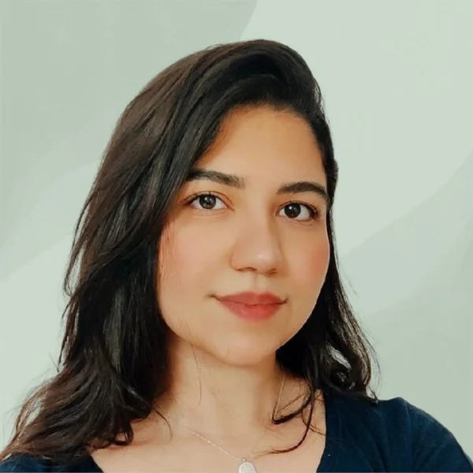
Founder
Founder · creator of the SELIF method
Designs the method, teaches, and directs the app, the games and the studio. FEschool grew out of the tools Farin wished every student had.
PersianEnglishSpanishTurkishGerman
Few language schools design their own method, build their own app and produce their own games. FEschool does all three, lean and fast.
We walk you through the app, a premium course and 100 Doors, live. The full SELIF framework, product architecture and production pipeline follow under a mutual NDA.
Ortaklık Kitapçığı · Kasım 2026
FEschool kendi yöntemini, uygulamasını, oyunlarını ve kurslarını üreten bir dil okulu. Her öğrenci kendisine ait bir yol bulur: kendi hedefi, kendi seviyesi, kendi hızı, kendi hikâyesi.
Ücretsiz. Tarayıcıda açılır.
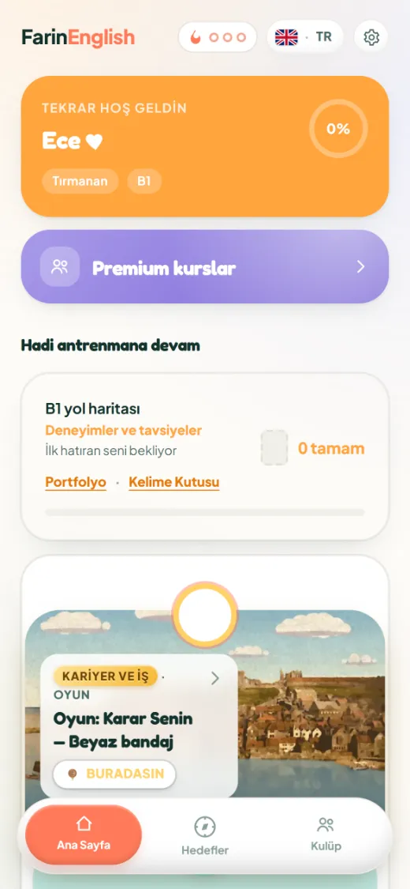
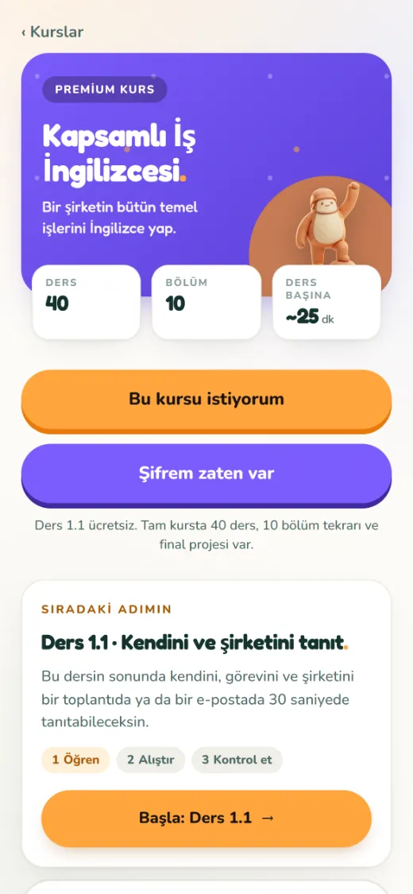
Durak 01 · Buradan başla
FEschool bir öğretmenin özel dersleri olarak başladı. Bugün modern bir dil akademisi ve küçük bir yaratıcı stüdyo; Türkiye ve İran’daki gerçek öğrencilerin kullandığı canlı bir ürünü var.
İngilizce ve İspanyolca için ücretsiz, kişisel bir yol haritası; hikâyeler, konuşma, şarkılar ve oyunlar tek yolda.
Giriş kapısıUygulama içinde hikâye ve gizem oyunları, ayrıca birlikte oynanan 3B dedektif oyunu 100 Doors.
Geri dönme nedeniKariyer ve sınav hedefleri için yedi premium kurs ve öğretmenle canlı dersler.
GelirKendi eğitim oyunlarımızı, sırada da kısa filmleri hem ürün olarak hem de iş ortakları için üretiyoruz.
Büyüme yoluHer öğrenciyi bulunduğu yerden gerçek hedefine taşıyan, kişisel ve oyun temelli bir öğrenme sistemi; kendileri için az ürün yapılmış iki büyük pazar için Türkçe ve Farsça hazırlandı.
Durak 02 · Sorun
Yetişkinler yıllarca çalışıyor ama konuşmaları gerektiğinde donup kalıyor. Eksik olan kullanım; piyasadaki seçeneklerin çoğu ise sorunun yalnızca bir kısmını çözüyor.
Türkiye, EF İngilizce Yeterlilik Endeksi 2025, beceriye göre puan. 71. sıra, “orta” seviye.
Durak 03 · Vizyon ve misyon
Her öğrenci başka bir dilde konuşabilen, düşünebilen ve kendini evinde hisseden biri olarak ayrılır.
Her öğrenciyi bulunduğu yerden gerçek hedefine taşıyan kişisel, oyun temelli bir sistem kurmak; öyle iyi ki öğrenci her gün kendi isteğiyle geri gelsin.
Dönüştüğümüz şey. Modern bir dil akademisi ve yaratıcı bir stüdyo. Öğretmek yöntemi kanıtlar; stüdyo yöntemi büyütür.
Önce senSistemin merkezinde öğrenci var.
%100 kişiselKopyala-yapıştır ders yok, tek tip yol yok.
Amaç odaklıBir iş, bir sınav, bir taşınma, bir seyahat.
Konuşmak önemliDil kullanmak içindir.
Gerçek dilDers kitaplarının atladıkları: argo ve gerçek durumlar.
Devam değil, ilerlemeHer adımın bir amacı var.
Durak 04 · Kimin için
Her öğrenci en fazla üç hedef seçerek başlar. Her hedefin uygulamada, web sitesinde ve paylaşımlarımızda kendi rengi ve kil karakteri var.
| Öğrenci | Bizden ne satın alıyor |
|---|---|
| Profesyoneller ve ofis çalışanları | Kariyer kursları: Kapsamlı İş, İK ve İş, Satış ve Dış Ticaret, Metin Yazarlığı, Yapay Zekâ, İş Mülakatı |
| Sınava hazırlananlar | IELTS: 10 tam sınav; yazma görevlerini Farin değerlendirir |
| Yurt dışına taşınanlar | Ücretsiz yol, kariyer kursları ve canlı dersler |
| Günlük hayat ve seyahat için öğrenenler | Ücretsiz uygulama: hikâyeler, şarkılar ve oyunlar |
| Şirketler | Ekip indirimli ve canlı destekli çalışan paketleri |
| Öğretmen isteyenler | Birebir ya da küçük gruplarla canlı online dersler |
Ülkelere göre Instagram kitlemiz, Ekim 2026.
Dört arayüz dili; ilk ekranda seçilir.
İki pazar da İngilizce istiyor ve kendi öğrencileri için yapılmış ürün az. İspanyolca, aynı pazarlarda ikinci bir dil hattı açıyor.
Durak 05 · Pazar
Türkiye ve İran’daki öğrenciler global uygulamalar, özel ders platformları, okullar ve video kurslar arasında seçim yapıyor. Her biri sorunun bir kısmını çözüyor.
Duolingo, Babbel, Busuu
Babbel yılda ₺3.399 · Busuu Premium yılda ₺509
İyi yaptığıGünlük alışkanlık, özenli tasarım, düşük fiyat
Eksik kalanHerkese aynı kurs, az gerçek konuşma, kariyer ve sınavda az derinlik
Cambly, Preply
Cambly ayda ₺411–3.573 · Preply öğretmenleri saati 15–40 ABD doları
İyi yaptığıGerçek sohbet
Eksik kalanSaat başı ödeme; dersler arasında sistem yok
Berlitz, üniversite merkezleri, yerel kurslar
Berlitz online IELTS 3 ay ₺6.900 · İTÜ SEM IELTS 100 saat ₺28.450
İyi yaptığıDüzen ve bilinen bir isim
Eksik kalanSınıfa ve ders kitabına bağlı, pahalı
Udemy, Maktabkhooneh, Boğaziçi Enstitüsü
Maktabkhooneh mülakat kursu 174.500 tümen · Boğaziçi B2 İş İngilizcesi ₺2.499
İyi yaptığıUcuz, çoğu zaman sertifikalı
Eksik kalanSadece izleme: pratik yok, geri bildirim yok, yol yok
Bizim değerlendirmemiz, Kasım 2026.
| — | Hedefine göre kurulan yol | Hikâye ve oyun deneyimi | Kariyer ve sınav derinliği | Türkçe ve Farsça | İstediğinde öğretmen |
|---|---|---|---|---|---|
| Global uygulamalar | Kısmen | Kısmen | Kısmen | Kısmen | Hayır |
| Özel ders platformları | Kısmen | Hayır | Kısmen | Kısmen | Evet |
| Okullar ve enstitüler | Hayır | Hayır | Evet | Kısmen | Evet |
| Video kurs siteleri | Hayır | Hayır | Kısmen | Evet | Hayır |
| FEschool | Evet | Evet | Evet | Evet | Evet |
EvetKısmenHayır
Fiyatlar Türkiye ve İran’daki resmî fiyat sayfaları ve uygulama mağazalarından, Ekim 2026’da kontrol edildi.
Durak 06 · Konumumuz
Çoğu ürün öğrenciden kursa uymasını ister. FEschool kursu öğrenciye uydurur. İnsanların bizim hakkımızda hatırlamasını istediğimiz tek fikir bu.
Konumlandırma cümlesiGerçek bir hedef için dile ihtiyaç duyan Türkiye ve İran’daki yetişkinler için FEschool, yolu onlara ait kılan öğrenme sistemidir. Öğrencinin hedefinden başlar, hikâyeler ve oyunlarla onu geri getirir ve hedefin kendisi için bir kursla bitirir. Global uygulamalar herkese aynı kursu verir, özel dersler ders bitince durur. FEschool her öğrenciyle yola devam eder.
Son cümle, uygulamanın kendi premium kurslar ekranından.
Durak 07 · Kişisel ne demek
Uygulama yaklaşık iki dakikada öğrencinin kim olduğunu öğrenir. Sonraki her ekran bunu kullanır.
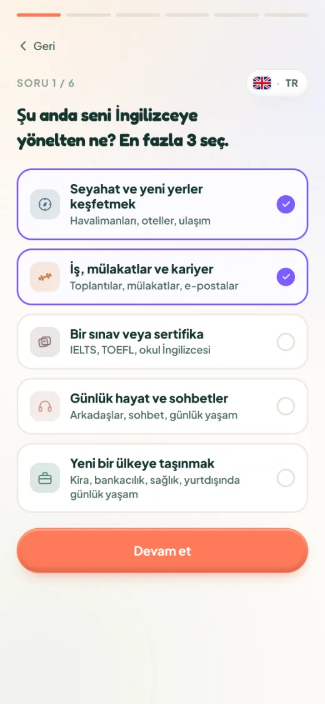
En fazla üç tane seç: seyahat, kariyer, sınav, günlük hayat, yurt dışına taşınmak.
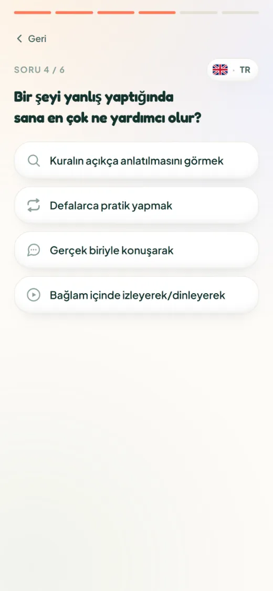
Bir şeyi yanlış yaptığında sana en çok ne yardımcı olur? Kurallar, pratik, sohbet ya da bağlam.
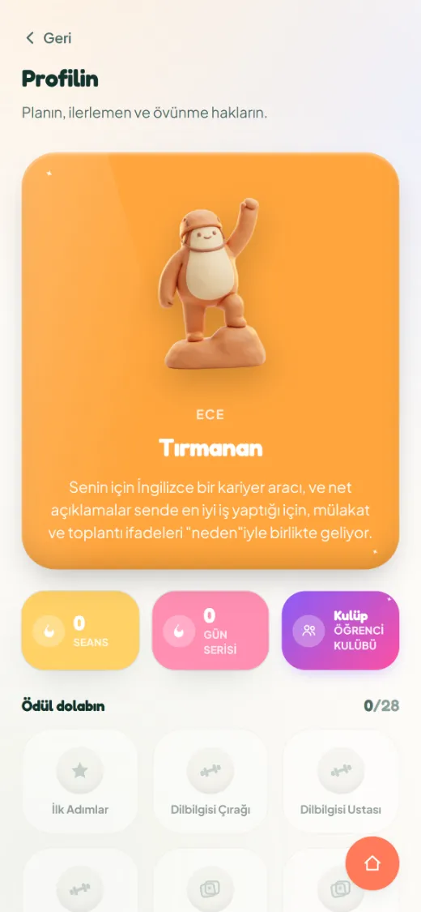
Cevaplar bir öğrenci profiline dönüşür: kariyer için öğrenen biri için Tırmanan gibi, ona göre yazılmış bir planla.
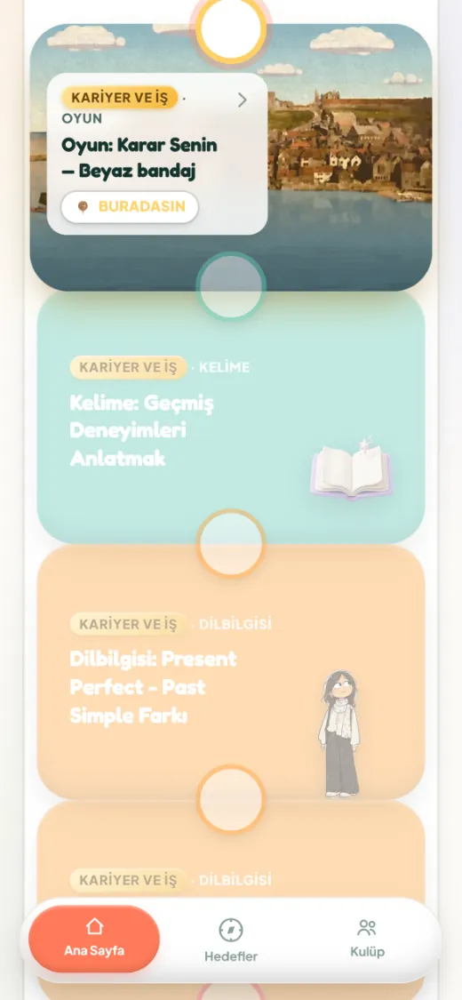
Öğrencinin seviyesinde bir yol haritası. Her durak onun hedefiyle etiketlenir.
Yol kendini ayarlamaya devam eder. Kaçırılan sorular geri gelir, biten duraklar Yolculuk Günlüğü’ne bir hatıra bırakır ve ilerleme kaybolmadan yeni bir hedef eklenebilir.
Yol haritalarının nasıl kurulduğu, sıralandığı ve uyarlandığı bize aittir ve gizlilik sözleşmesiyle paylaşılır.
Durak 08 · SELIF yöntemi
SELIF, kurucumuzun 11 yıllık sınıf deneyiminden doğan, FEschool’a ait öğretim yöntemidir. Uygulamadaki her durak, her oyun, her kurs dersi ve her canlı ders bu yöntem üzerine kurulur ve ona göre kontrol edilir.
Kelimeler asla liste olarak değil, gerçek mekânlarda gerçek karakterlerin olduğu bir hikâyenin içinde gelir.
“Önemsediğim birinin peşindeyim.”
Öğrenci başkasının yerine geçer ve o kişi olarak konuşur.
“Bugün dükkân sahibi benim.”
İnsanların gerçekten kullandığı ifadeler, herhangi bir kural kutusundan önce eylemin içinde.
“İnsanlar gerçekten böyle söylüyor.”
Her dersin etrafında doğal sesler, müzik, video ve doğru kültürel ayrıntılar.
“O yeri duyabiliyor ve görebiliyorum.”
Kendi hızı, kendi hedefi, kendi yolu; gerçek hayata sığan kısa adımlarla.
“Günüme ve amacıma uyuyor.”
SELIF’in tam çerçevesi, ders yapısı ve kalite kontrolleri gizlilik sözleşmesiyle paylaşılır.
Durak 09 · Sistem
Ücretsiz uygulama öğrencileri getirir. Oyunlar onları geri getirir. Kurslar ve dersler gelir sağlar. Stüdyo, yöntemi tekrar tekrar satılabilen ürünlere dönüştürür.
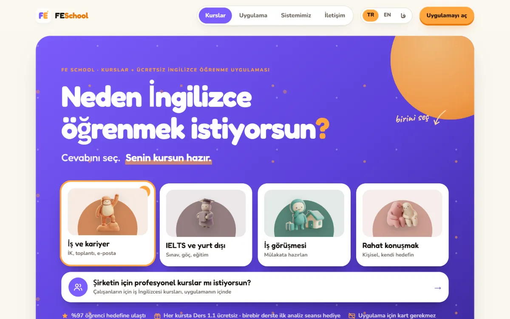
Durak 10 · Uygulama
Menüler arasında kaybolmak yok. Hikâyeler, dil bilgisi, kelime, konuşma, yazma, şarkılar ve oyunlar tek bir yolculuğun durakları. Web’de ve Android’de ücretsiz.
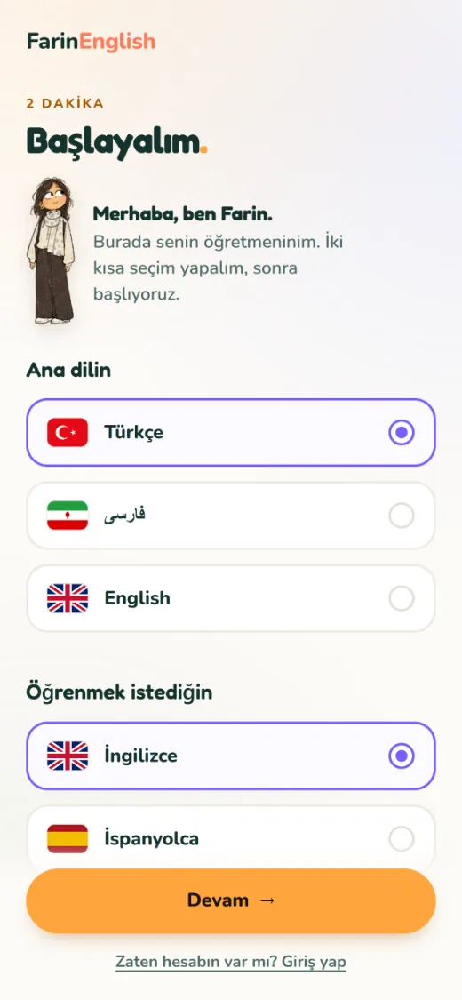
Öğretmen karakteri Farin, öğrenciyi kendi dilinde karşılar.
Ad, profil, seviye ve ilerleme en başta.
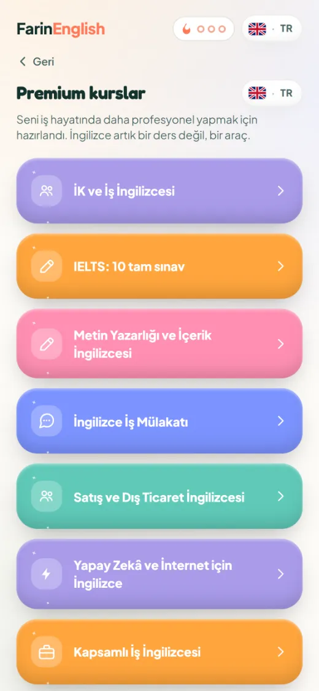
Yedi premium kursun hepsi ana ekrandan açılır.
Durak 11 · Oyunlar
Oyunlar FEschool’un en güçlü farkı. Onları gerçek eğlence oyunlarının standardında tutuyoruz: tam ekran, hikâye odaklı ve A1’den C1’e her seviye için; İngilizce ve İspanyolca.
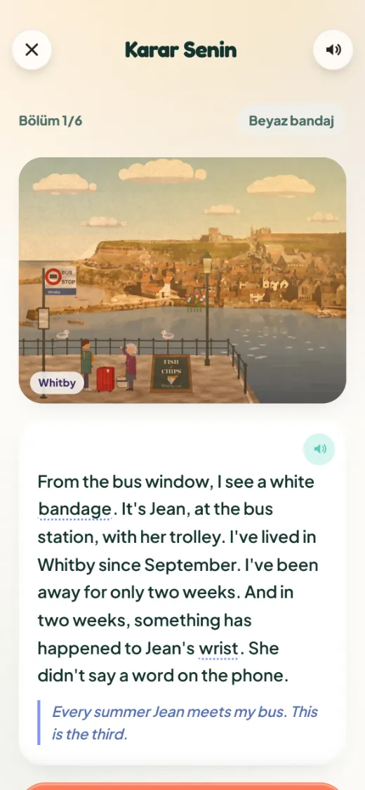
Çizgi roman tarzı bir macera serisi. Aynı kahraman, her seviyede yeni bir ülke ve hikâyeyi değiştiren seçimler.
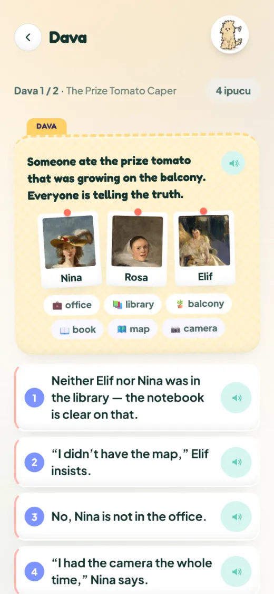
Kısa gizem bölümleri. İpuçlarını oku, şüphelileri ele, suçluyu bul.
Cümleleri takip ederek yapılan, kek pişirmek gibi sakin ve uygulamalı projeler.
Bir dinleme oyunu. Eski bir radyoyu ayarla, kısa bir yayını takip et, sonra metnini oku.
Tarayıcıda ortak oynanan 3B dedektif oyunu
İki ile altı oyuncu, bir sonraki kapıyı açmak için İngilizce soru soruyor, anlatıyor ve tartışıyor.
The Empty HouseThe Missing DiamondThe Cold Kitchen
Word RushBuild ItTrap DashWord BingoMini CrossMagic WordsListen & TypeSay It BackStory HuntOrder Up!Passport Desk
Oyun kuralları, hikâye motorları ve üretim sürecimiz gizlilik sözleşmesiyle paylaşılır.
Durak 12 · Premium kurslar
Ücretsiz yol alışkanlığı kurar. Premium kurslar işi bitirir: bir kariyer görevi, bir mülakat, bir sınav. Yedisi de uygulamada yayında.
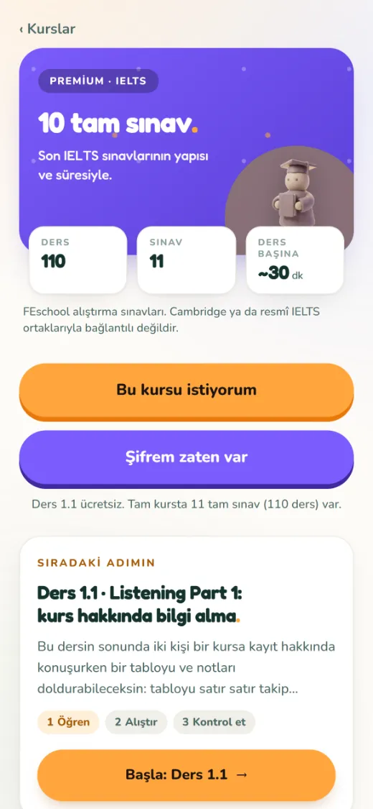
Bir şirketin bütün temel işlerini, yönetim kurulu seviyesine kadar İngilizce yap.
İş ilanından disiplin görüşmesine, İK’nın 32 gerçek görevini İngilizce yap.
Son IELTS sınavlarının bölüm bölüm yakın kopyaları. Yazma görevlerini Farin değerlendirir.
İngilizce satış yap, ticaret yürüt ve işinde kullanacağın bir satış dosyasıyla bitir.
Yabancı kitleler için yaz; yapay zekâ taslaklarını değerlendirip düzeltmeyi öğren.
Araçların nasıl çalıştığını bil. Net prompt yaz. Sonucu kontrol et.
Mülakata kendi cevaplarınla hazır gir.
Liste fiyatları, Kasım 2026. Türkiye için lira, İran için tümen.
Her kursta öğrencinin gerçek bir iş gibi yaptığı projeler de var.
Her kursun 1.1 dersi ücretsiz. Tek ödeme 12 ay erişim sağlar. Öğrenci “Bu kursu istiyorum”a dokunur, ödemeyi yapar ve kişisel kurs şifresini alır.
Aynı kurslardan çalışan paketleri: 21–39 kişiye %15, 40 ve üzeri kişiye %20 indirim ve her siparişte Farin ile 8 canlı destek oturumu.
Durak 13 · Pazarlama
Deneyimi pazarlıyoruz. İnsanlar oyunları, hikâyeleri ve kendi yollarını görüyor; her mesaj onların hedefiyle ilgili. Akışımızda dil bilgisi dersi paylaşmayız.
Genişlikler adımların sırasını gösterir, ölçülmüş dönüşümü değil.
@the_feschool
Haftada üç Türkçe ve üç Farsça paylaşım, ayrıca Farin’in kendi Reels videoları.
Şirket sayfası + Farin’in profili
Premium ve iş kursları hakkında her gün bir Farsça paylaşım.
thefeschool.com
Üç dil, fiyatlı kurs sayfaları, blog, Farsça kurs sayfaları ve anında dizinleme.
Her kursta tek bir buton
Her satış bir mesajla başlar. Farsça paylaşım sayfalarında ilk 20 kişiye özel teklif var.
thefeschool.com/companies
Doğru paketi öneren bir anketle çalışan eğitimi sayfası.
Yalnızca Türkiye
Küçük, ölçülü Meta testleri. Meta reklamları İran’ı hedefleyemez.
Mart 2027’ye kadar 10.000 Instagram takipçisi.
Okullar ve üniversiteler, İK departmanları, içerik üreticileri ve her pazarda dağıtım.
Durak 14 · Neredeyiz
Buradaki her şey var ve kullanılıyor. Yalnızca gösterebildiğimiz rakamları paylaşıyoruz.
Kişisel yol haritası İngilizce ve İspanyolcada yayında
Doğal sesler yayında
Türkçe, İngilizce ve Farsça yeni web sitesi, fiyatlarla
Yedinci premium kurs yayında: Kapsamlı İş İngilizcesi
Farsça kurs merkezi açıldı, Farsça satışlar sürüyor
Türkçe ve İngilizce satışlar açılıyor
Yeni oyunlar yayına giriyor
Google Play lansmanı
TamamlandıSırada
Uygulamada 237 ders
Ayrıca online 100 Doors
Uygulama, Ekim 2026, kendi test hesaplarımız hariç
İngilizce ve İspanyolca
Türkiye: birebir, ders başı ₺830–850. İran: 1–4 kişilik gruplar; Genel İngilizce seans başı 3.500.000, İş İngilizcesi 4.500.000 tümen.
Tek ödeme, 12 ay erişim; uygulamada şifreyle açılır.
Şirket eğitimi, uygulama mağazası satışları, iş ortakları için stüdyo işleri.
Türkiye liste fiyatları ve İran için tümen fiyatı.
Durak 15 · Yol haritası
Bunlar söz değil, hedef. Her aşama bir öncekinin hazır olmasıyla başlar; sonraki aşamalar birlikte çalışacağımız ortaklara bağlı.
Şimdiden Aralık 2026’ya kadar
2027’nin ilk yarısı
2027’nin ikinci yarısı
2028 ve sonrası
Durak 16 · Bizimle kur
Kurucu
Kurucu · SELIF yönteminin yaratıcısı
Yöntemi tasarlar, ders verir; uygulamayı, oyunları ve stüdyoyu yönetir. FEschool, Farin’in her öğrencinin sahip olmasını istediği araçlardan doğdu.
FarsçaİngilizceİspanyolcaTürkçeAlmanca
Çok az dil okulu kendi yöntemini tasarlar, kendi uygulamasını yapar ve kendi oyunlarını üretir. FEschool üçünü de yalın ve hızlı şekilde yapıyor.
Uygulamayı, bir premium kursu ve 100 Doors’u canlı olarak birlikte geziyoruz. SELIF’in tam çerçevesi, ürün mimarisi ve üretim süreci karşılıklı gizlilik sözleşmesinden sonra paylaşılır.
دفترچهی همکاری · نوامبر ۲۰۲۶
FEschool مدرسهی زبانی است که روش، اپ، بازیها و دورههایش را خودش میسازد. هر زبانآموز مسیری دارد که مال خود اوست: هدف خودش، سطح خودش، سرعت خودش، داستان خودش.
رایگان. در مرورگر باز میشود.
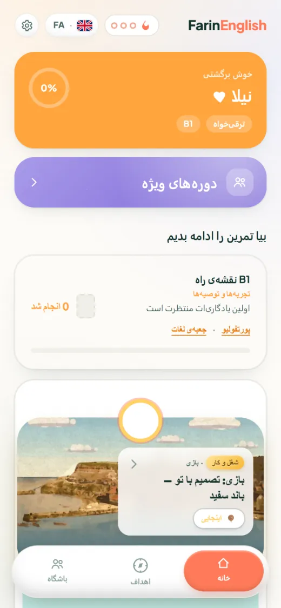
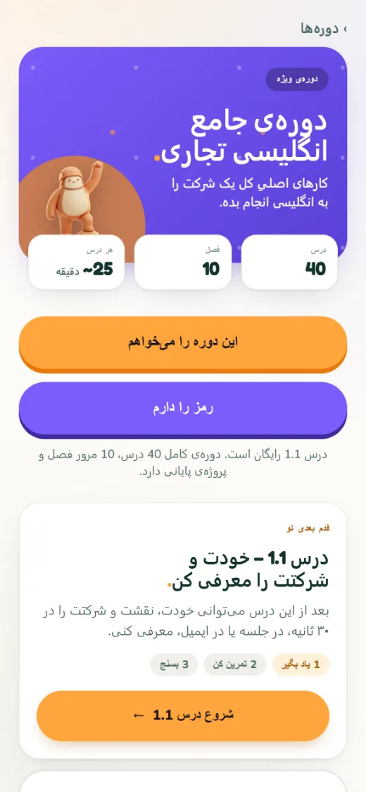
ایستگاه ۰۱ · از اینجا شروع کن
FEschool با کلاسهای خصوصی یک معلم شروع شد. امروز یک آکادمی زبان مدرن و یک استودیوی خلاق کوچک است، با محصولی فعال که زبانآموزان واقعی در ترکیه و ایران از آن استفاده میکنند.
نقشهی راه شخصی و رایگان برای انگلیسی و اسپانیایی؛ داستان، صحبت، آهنگ و بازی، همه در یک مسیر.
درِ ورودبازیهای داستانی و معمایی داخل اپ، بهعلاوهی 100 Doors، یک بازی کارآگاهی سهبعدی گروهی.
دلیل برگشتنهفت دورهی ویژه برای هدفهای شغلی و آزمون، بهعلاوهی کلاس زنده با معلم.
درآمدبازیهای آموزشی خودمان و در قدم بعد فیلم کوتاه را میسازیم، هم بهعنوان محصول و هم برای شرکا.
راه رشدسیستمی شخصی و مبتنی بر بازی که هر زبانآموز را از جایی که هست به هدف واقعیاش میرساند؛ ساختهشده به فارسی و ترکی برای دو بازار بزرگ که محصول کمی برایشان ساخته شده.
ایستگاه ۰۲ · مسئله
بزرگسالان سالها درس میخوانند و باز هم وقتی باید حرف بزنند، قفل میکنند. چیزی که کم است استفاده است، و بیشتر گزینههای بازار فقط بخشی از مشکل را حل میکنند.
ترکیه، شاخص مهارت انگلیسی EF ۲۰۲۵، امتیاز به تفکیک مهارت. رتبهی ۷۱، سطح «متوسط».
ایستگاه ۰۳ · چشمانداز و مأموریت
هر زبانآموز وقتی میرود، میتواند به زبانی دیگر حرف بزند، فکر کند و در آن احساس خانه داشته باشد.
ساختن سیستمی شخصی و مبتنی بر بازی که هر زبانآموز را از جایی که هست به هدف واقعیاش برساند؛ آنقدر خوب که خودش هر روز برگردد.
چیزی که داریم میشویم. یک آکادمی زبان مدرن و یک استودیوی خلاق. تدریس، روش را ثابت میکند؛ استودیو، روش را بزرگ میکند.
اول توزبانآموز مرکز سیستم است.
۱۰۰٪ شخصینه درس کپیشده، نه مسیر یکسان برای همه.
هدفمحوریک شغل، یک آزمون، یک مهاجرت، یک سفر.
صحبت کردن مهم استزبان برای استفاده است.
زبان واقعیچیزهایی که کتابها جا میاندازند: اصطلاحات عامیانه و موقعیتهای واقعی.
پیشرفت، نه فقط حضورهر قدم دلیلی برای بودنش دارد.
ایستگاه ۰۴ · برای چه کسانی
هر زبانآموز با انتخاب حداکثر سه هدف شروع میکند. هر هدف در اپ، وبسایت و پستهای ما رنگ و شخصیت خمیری خودش را دارد.
| زبانآموز | چه چیزی از ما میخرد |
|---|---|
| متخصصها و کارمندان اداری | دورههای شغلی: جامع تجاری، منابع انسانی و کسبوکار، فروش و بازرگانی، کپیرایتینگ، هوش مصنوعی، مصاحبهی شغلی |
| داوطلبان آزمون | آیلتس: ۱۰ آزمون کامل، با بررسی نوشتن توسط فرین |
| کسانی که مهاجرت میکنند | مسیر رایگان، دورههای شغلی و کلاس زنده |
| زبانآموزهای زندگی روزمره و سفر | اپ رایگان: داستان، آهنگ و بازی |
| شرکتها | بستههای کارمندی با تخفیف تیمی و پشتیبانی زنده |
| کسانی که معلم میخواهند | کلاس آنلاین زنده، خصوصی یا گروه کوچک |
مخاطبان اینستاگرام ما به تفکیک کشور، اکتبر ۲۰۲۶.
چهار زبان رابط کاربری که در صفحهی اول انتخاب میشود.
هر دو بازار انگلیسی میخواهند و محصولاتی که برای زبانآموزهایشان ساخته شده باشد کم است. اسپانیایی در همین بازارها خط زبان دوم را باز میکند.
ایستگاه ۰۵ · بازار
زبانآموزها در ترکیه و ایران بین اپهای جهانی، پلتفرمهای معلم خصوصی، آموزشگاهها و دورههای ویدیویی انتخاب میکنند. هرکدام بخشی از مشکل را حل میکند.
Duolingo، Babbel، Busuu
Babbel سالی ₺۳٬۳۹۹ · Busuu Premium سالی ₺۵۰۹
نقطهی قوتعادت روزانه، طراحی تمیز، قیمت پایین
کمبودیک دوره برای همه، صحبت واقعی کم، عمق کم در شغل و آزمون
Cambly، Preply
Cambly ماهی ₺۴۱۱ تا ₺۳٬۵۷۳ · معلمهای Preply ساعتی ۱۵ تا ۴۰ دلار
نقطهی قوتمکالمهی واقعی
کمبودپرداخت ساعتی، بدون سیستم بین جلسهها
Berlitz، مراکز دانشگاهی، آموزشگاههای محلی
آیلتس آنلاین Berlitz سه ماه ₺۶٬۹۰۰ · آیلتس İTÜ SEM صد ساعت ₺۲۸٬۴۵۰
نقطهی قوتساختار و اسم شناختهشده
کمبودوابسته به کلاس و کتاب درسی، و گران
Udemy، مکتبخونه، Boğaziçi Enstitüsü
دورهی مصاحبهی مکتبخونه ۱۷۴٬۵۰۰ تومان · انگلیسی تجاری B2 بوغازیچی ₺۲٬۴۹۹
نقطهی قوتارزان، معمولاً با مدرک
کمبودفقط تماشا: نه تمرین، نه بازخورد، نه مسیر
ارزیابی ما، نوامبر ۲۰۲۶.
| — | مسیر ساختهشده بر اساس هدف تو | تجربهی داستان و بازی | عمق در شغل و آزمون | به فارسی و ترکی | معلم، هر وقت بخواهی |
|---|---|---|---|---|---|
| اپهای جهانی | تا حدی | تا حدی | تا حدی | تا حدی | نه |
| پلتفرمهای معلم خصوصی | تا حدی | نه | تا حدی | تا حدی | بله |
| آموزشگاهها و مؤسسهها | نه | نه | بله | تا حدی | بله |
| سایتهای دورهی ویدیویی | نه | نه | تا حدی | بله | نه |
| FEschool | بله | بله | بله | بله | بله |
بلهتا حدینه
قیمتها از صفحههای رسمی قیمت و فروشگاههای اپ در ترکیه و ایران، بررسیشده در اکتبر ۲۰۲۶.
ایستگاه ۰۶ · جایگاه ما
بیشتر محصولات از زبانآموز میخواهند خودش را با دوره جور کند. FEschool دوره را با زبانآموز جور میکند. این همان یک ایدهای است که میخواهیم مردم از ما به یاد بیاورند.
بیانیهی جایگاهبرای بزرگسالانی در ترکیه و ایران که برای یک هدف واقعی به زبان نیاز دارند، FEschool سیستم یادگیریای است که مسیر را مال خود آنها میکند. از هدفشان شروع میکند، با داستان و بازی آنها را برمیگرداند و با دورهای برای خود همان هدف تمامش میکند. اپهای جهانی به همه یک دوره میدهند و معلم خصوصی با تمام شدن جلسه متوقف میشود. FEschool با هر زبانآموز ادامه میدهد.
جملهی آخر از صفحهی دورههای ویژهی خود اپ است.
ایستگاه ۰۷ · شخصی یعنی چه
اپ در حدود دو دقیقه میفهمد زبانآموز کیست. هر صفحهی بعدی از همین استفاده میکند.
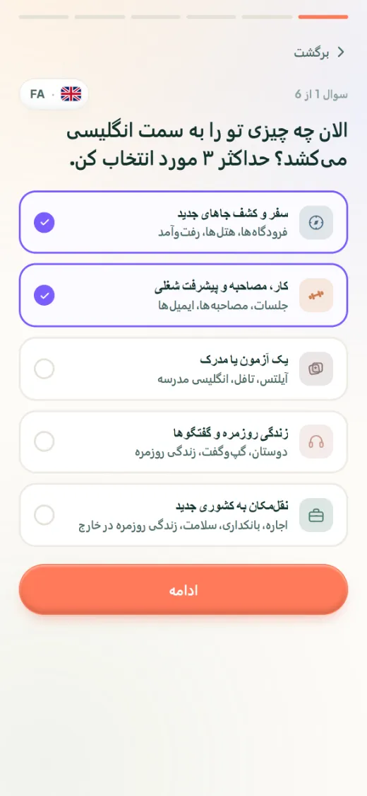
حداکثر سه هدف انتخاب کن: سفر، شغل، آزمون، زندگی روزمره، مهاجرت.
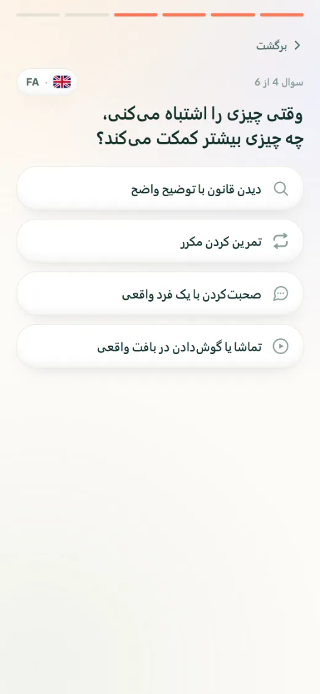
وقتی چیزی را اشتباه میکنی، چه چیزی بیشتر کمکت میکند؟ قاعده، تمرین، گفتوگو یا بافت.
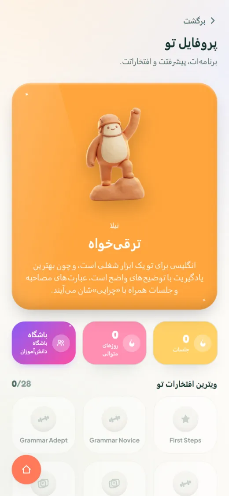
جوابها به یک تیپ زبانآموز تبدیل میشوند، مثل «ترقیخواه» برای کسی که برای شغلش یاد میگیرد، با برنامهای که برای او نوشته شده.
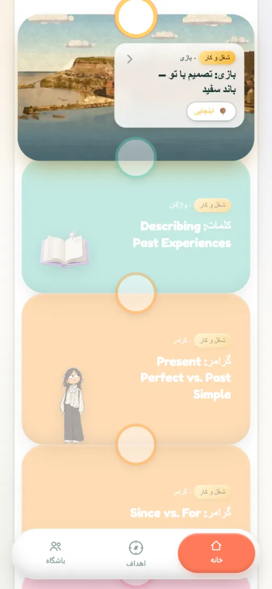
نقشهی راهی در سطح زبانآموز. هر ایستگاه با هدف او برچسب خورده.
مسیر مدام خودش را تنظیم میکند. سؤالهایی که جا ماندند برمیگردند، هر ایستگاهِ تمامشده یک یادگاری در «دفترچهی سفر» میگذارد و میشود بدون از دست دادن پیشرفت، هدف تازهای اضافه کرد.
اینکه نقشههای راه چطور ساخته، مرتب و تطبیق داده میشوند متعلق به ماست و فقط با NDA در اختیار قرار میگیرد.
ایستگاه ۰۸ · روش SELIF
SELIF روش آموزشی مخصوص FEschool است که بنیانگذار ما از دل ۱۱ سال تدریس ساخته. هر ایستگاه اپ، هر بازی، هر درس دوره و هر کلاس زنده بر پایهی آن ساخته و با آن سنجیده میشود.
کلمهها هیچوقت بهصورت فهرست نمیآیند؛ درون داستانی با شخصیتهای واقعی در مکانهای واقعی میآیند.
«دارم کسی را دنبال میکنم که برایم مهم است.»
زبانآموز خودش را جای کسی دیگر میگذارد و از زبان او حرف میزند.
«امروز من فروشندهام.»
اصطلاحاتی که مردم واقعاً به کار میبرند، اول در عمل و بعد در قالب قاعده.
«مردم واقعاً همینطوری میگویند.»
صدای طبیعی، موسیقی، ویدیو و جزئیات فرهنگی درست، دور تا دور هر درس.
«میتوانم آن مکان را بشنوم و ببینم.»
سرعت خودش، هدف خودش، مسیر خودش؛ با قدمهای کوتاهی که در زندگی واقعی جا میشوند.
«با روزم و دلیلم جور است.»
چارچوب کامل SELIF، ساختار درس و سنجش کیفیت فقط با NDA در اختیار قرار میگیرد.
ایستگاه ۰۹ · سیستم
اپ رایگان زبانآموزها را جذب میکند. بازیها آنها را برمیگردانند. دورهها و کلاسها درآمد میسازند. استودیو روش را به محصولاتی تبدیل میکند که بارها فروخته میشوند.
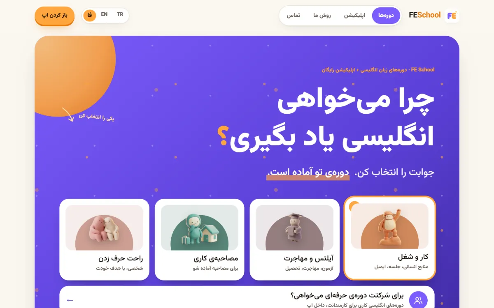
ایستگاه ۱۰ · اپلیکیشن
سرگردانی بین منوها نیست. داستان، گرامر، واژگان، صحبت، نوشتن، آهنگ و بازی همه ایستگاههای یک سفرند. رایگان در وب و اندروید.
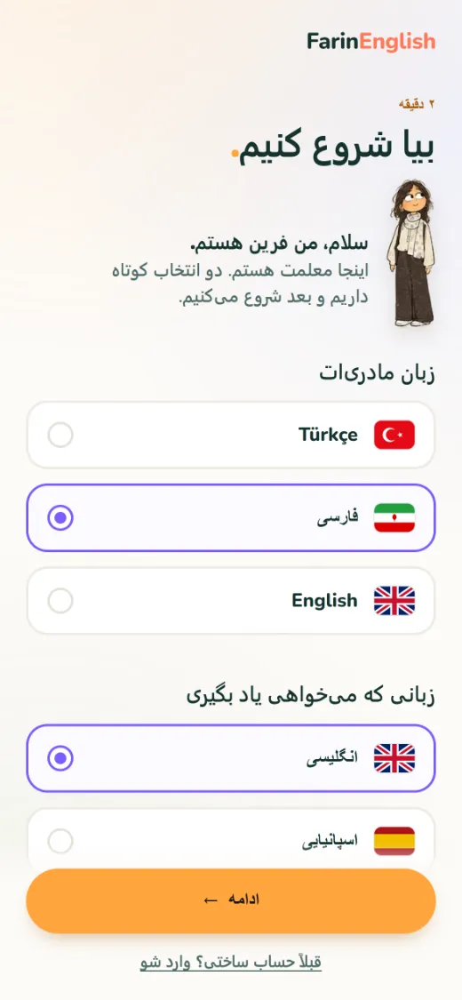
فرین، شخصیت معلم، به زبان خود زبانآموز به او خوشآمد میگوید.
نام، تیپ یادگیری، سطح و پیشرفت، اول از همه.
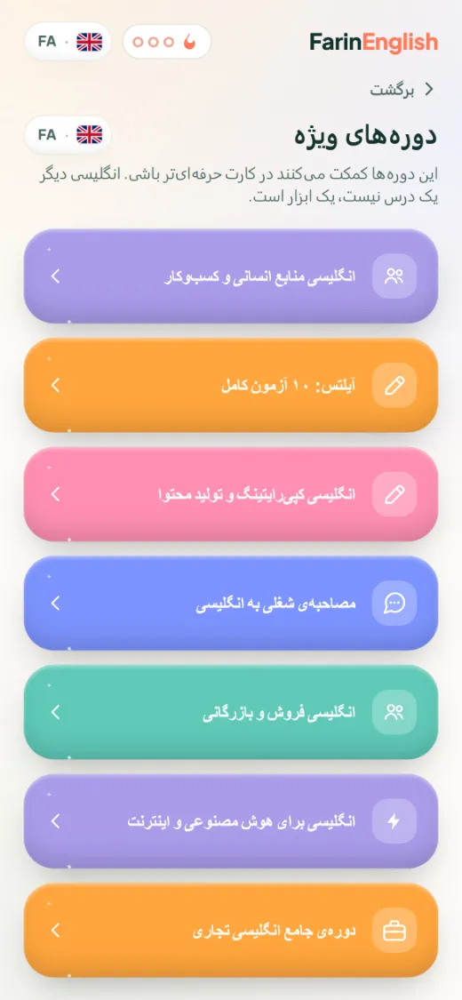
هر هفت دورهی ویژه از صفحهی خانه باز میشوند.
ایستگاه ۱۱ · بازیها
بازیها قویترین تمایز FEschool هستند. آنها را در سطح بازیهای سرگرمی واقعی میسازیم: تمامصفحه، داستانمحور و برای هر سطح از A1 تا C1، به انگلیسی و اسپانیایی.
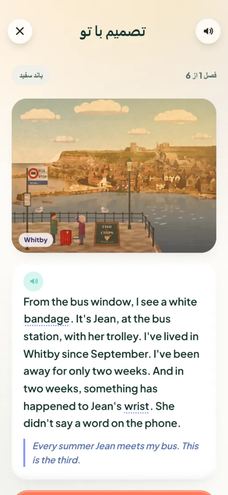
یک مجموعهی ماجرایی به سبک کمیک. یک قهرمان ثابت، در هر سطح یک کشور تازه و انتخابهایی که داستان را عوض میکنند.
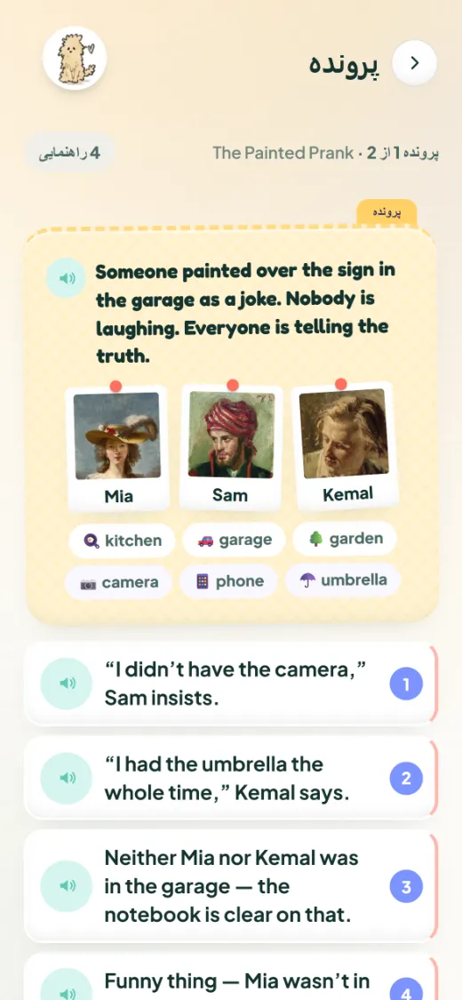
قسمتهای کوتاه معمایی. سرنخها را بخوان، مظنونها را کنار بگذار، مقصر را پیدا کن.
پروژههای آرام و عملی، مثل پختن کیک، که با دنبال کردن جملهها انجام میشوند.
یک بازی شنیداری. یک رادیوی قدیمی را تنظیم کن، یک برنامهی کوتاه را دنبال کن، بعد متنش را بخوان.
بازی کارآگاهی سهبعدی گروهی در مرورگر
دو تا شش بازیکن برای باز کردن در بعدی، به انگلیسی سؤال میپرسند، توصیف میکنند و استدلال میکنند.
The Empty HouseThe Missing DiamondThe Cold Kitchen
Word RushBuild ItTrap DashWord BingoMini CrossMagic WordsListen & TypeSay It BackStory HuntOrder Up!Passport Desk
قوانین بازی، موتورهای داستان و فرایند تولید ما فقط با NDA در اختیار قرار میگیرد.
ایستگاه ۱۲ · دورههای ویژه
مسیر رایگان عادت را میسازد. دورههای ویژه کار را تمام میکنند: یک کار شغلی، یک مصاحبه، یک آزمون. هر هفت دوره در اپ فعالاند.
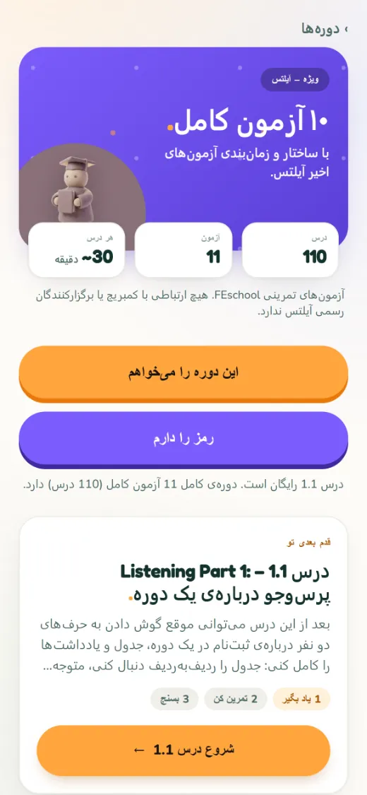
کارهای اصلی کل یک شرکت را تا سطح هیئتمدیره به انگلیسی انجام بده.
۳۲ کار واقعی منابع انسانی را به انگلیسی انجام بده، از آگهی استخدام تا جلسهی انضباطی.
نسخههای نزدیک به آزمونهای اخیر آیلتس، بخش به بخش. نوشتن را فرین بررسی میکند.
به انگلیسی بفروش و تجارت کن، و دوره را با یک بستهی فروش که در کارت به درد میخورد تمام کن.
برای مخاطب خارجی بنویس و یاد بگیر پیشنویسهای هوش مصنوعی را ارزیابی و اصلاح کنی.
بدان ابزارها چطور کار میکنند. پرامپت روشن بنویس. نتیجه را بررسی کن.
با جوابهای آمادهی خودت وارد مصاحبه شو.
قیمتهای فهرست، نوامبر ۲۰۲۶. لیر برای ترکیه، تومان برای ایران.
هر دوره پروژههایی هم دارد که زبانآموز مثل یک کار واقعی انجام میدهد.
درس ۱.۱ هر دوره رایگان است. یک بار پرداخت، ۱۲ ماه دسترسی. زبانآموز روی «این دوره را میخواهم» میزند، پرداخت میکند و رمز شخصی دوره را میگیرد.
بستههای کارمندی از همین دورهها: ۱۵٪ تخفیف برای ۲۱ تا ۳۹ نفر، ۲۰٪ برای ۴۰ نفر و بیشتر، و ۸ جلسهی پشتیبانی زنده با فرین در هر سفارش.
ایستگاه ۱۳ · بازاریابی
ما تجربه را بازاریابی میکنیم. مردم بازیها، داستانها و مسیر خودشان را میبینند و هر پیام دربارهی هدف خودشان است. درس گرامر هیچوقت در صفحهی ما منتشر نمیشود.
عرض مراحل ترتیب را نشان میدهد، نه نرخ تبدیل اندازهگیریشده.
@the_feschool
هفتهای سه پست ترکی و سه پست فارسی، بهعلاوهی ریلزهای خود فرین.
صفحهی شرکت + پروفایل فرین
هر روز یک پست فارسی دربارهی دورههای ویژه و تجاری.
thefeschool.com
سه زبان، صفحهی دورهها با قیمت، وبلاگ، صفحههای فارسی دورهها و ایندکس فوری.
یک دکمه روی هر دوره
هر فروش با یک پیام شروع میشود. صفحههای اشتراکی فارسی پیشنهاد ویژهی ۲۰ نفر اول را دارند.
thefeschool.com/companies
صفحهی آموزش کارمندان با پرسشنامهای که بستهی مناسب را پیشنهاد میدهد.
فقط ترکیه
تستهای کوچک و سنجیده در Meta. تبلیغات Meta نمیتواند ایران را هدف بگیرد.
۱۰٬۰۰۰ دنبالکننده در اینستاگرام تا مارس ۲۰۲۷.
مدارس و دانشگاهها، واحدهای منابع انسانی، تولیدکنندگان محتوا و توزیع در هر بازار.
ایستگاه ۱۴ · کجا هستیم
همهی آنچه اینجاست وجود دارد و در حال استفاده است. فقط عددهایی را میگوییم که میتوانیم نشان دهیم.
نقشهی راه شخصی در انگلیسی و اسپانیایی فعال شد
صدای طبیعی فعال شد
وبسایت تازه به فارسی، ترکی و انگلیسی، با قیمت
هفتمین دورهی ویژه فعال شد: دورهی جامع انگلیسی تجاری
مرکز دورههای فارسی باز شد و فروش فارسی جریان دارد
باز شدن فروش ترکی و انگلیسی
فعال شدن بازیهای تازه
انتشار در گوگلپلی
انجام شدبعدی
۲۳۷ درس در اپ
بهعلاوهی 100 Doors آنلاین
اپ، اکتبر ۲۰۲۶، بدون حسابهای آزمایشی خودمان
انگلیسی و اسپانیایی
ترکیه: خصوصی، جلسهای ₺۸۳۰ تا ₺۸۵۰. ایران: گروههای ۱ تا ۴ نفره، جلسهای ۳٬۵۰۰٬۰۰۰ تومان برای انگلیسی عمومی و ۴٬۵۰۰٬۰۰۰ تومان برای انگلیسی تجاری.
یک بار پرداخت، ۱۲ ماه دسترسی، باز شدن در اپ با رمز.
آموزش سازمانی، فروش در فروشگاههای اپ، پروژههای استودیو برای شرکا.
قیمتهای فهرست در ترکیه، بههمراه قیمت تومانی برای ایران.
ایستگاه ۱۵ · نقشهی راه
اینها هدفاند، نه وعده. هر مرحله وقتی شروع میشود که مرحلهی قبل آماده باشد، و مراحل بعدی به شرکایی بستگی دارد که با آنها میسازیم.
از الان تا دسامبر ۲۰۲۶
نیمهی اول ۲۰۲۷
نیمهی دوم ۲۰۲۷
۲۰۲۸ و بعد از آن
ایستگاه ۱۶ · با ما بساز
بنیانگذار
بنیانگذار · خالق روش SELIF
روش را طراحی میکند، تدریس میکند و اپ، بازیها و استودیو را هدایت میکند. FEschool از دل ابزارهایی بیرون آمد که فرین آرزو داشت هر شاگردی داشته باشد.
فارسیانگلیسیاسپانیاییترکیآلمانی
کمتر مدرسهی زبانی روش خودش را طراحی میکند، اپ خودش را میسازد و بازیهای خودش را تولید میکند. FEschool هر سه را با تیمی کوچک و سریع انجام میدهد.
اپ، یک دورهی ویژه و 100 Doors را بهصورت زنده با هم مرور میکنیم. چارچوب کامل SELIF، معماری محصول و فرایند تولید پس از امضای NDA دوطرفه ارائه میشود.